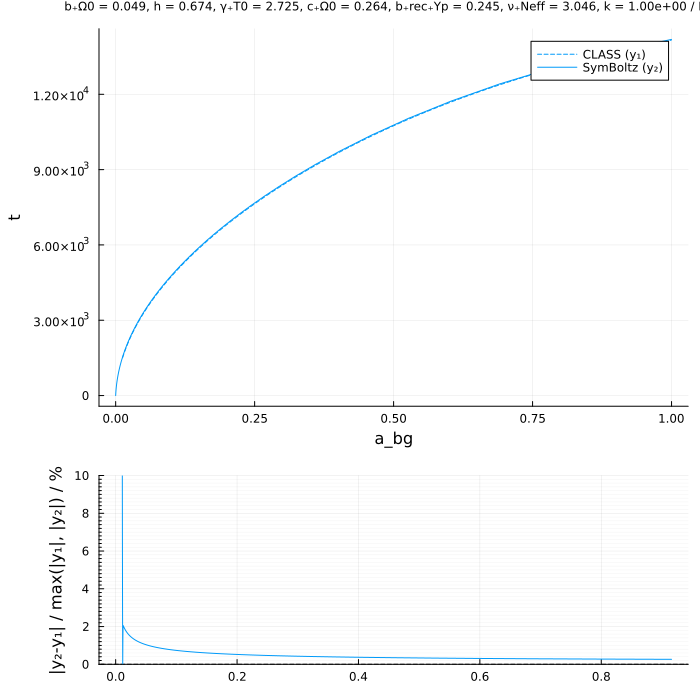
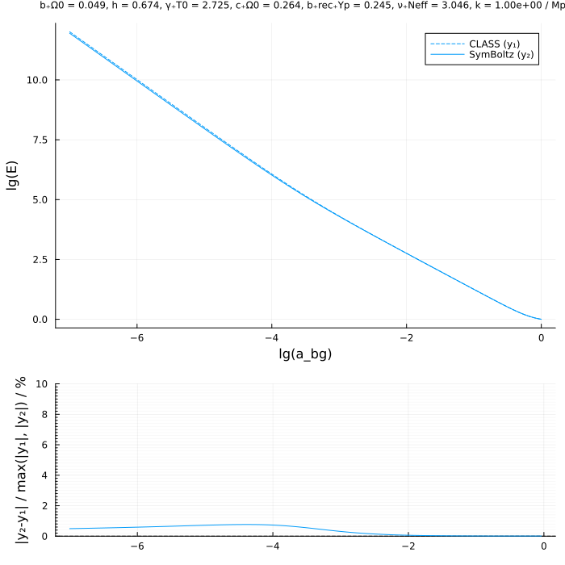
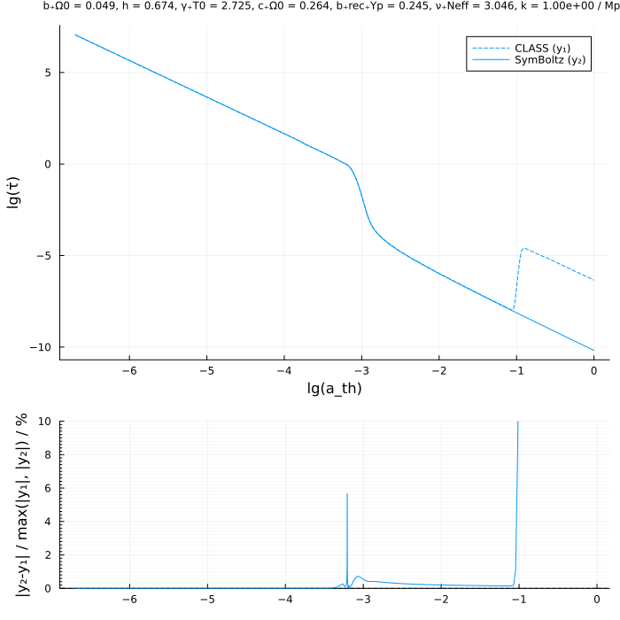
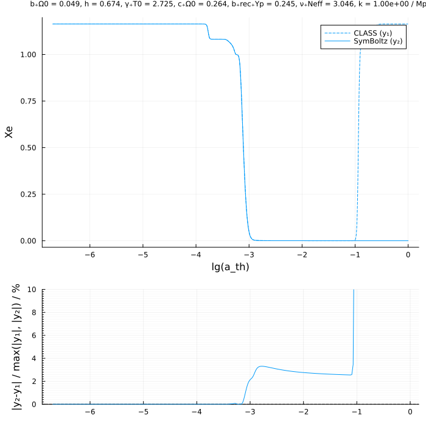
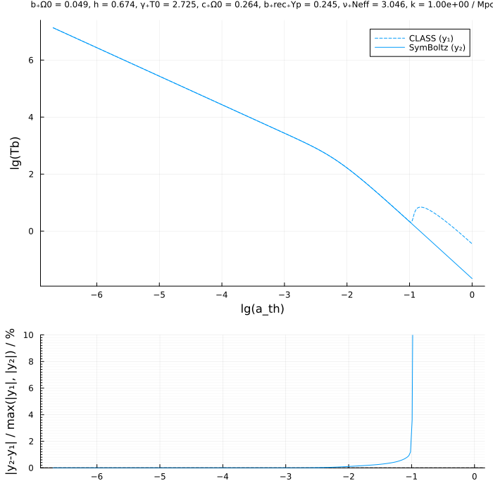
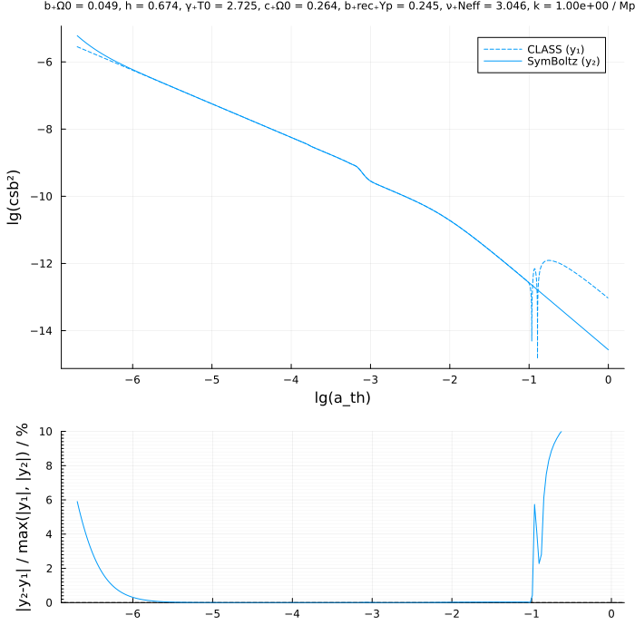
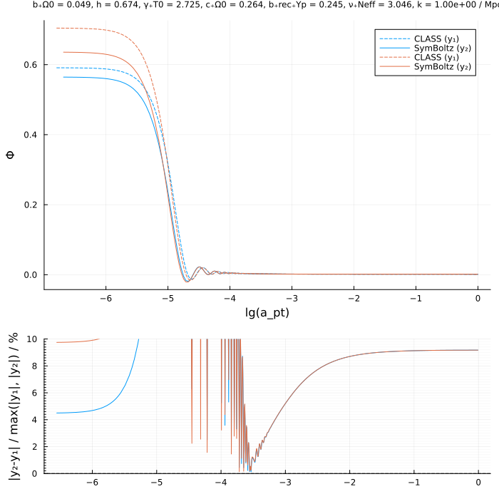
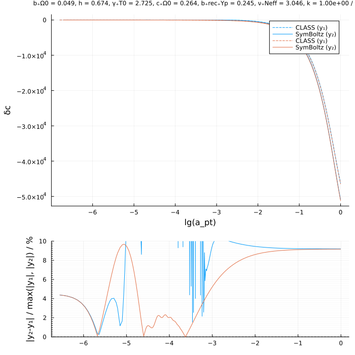

Comparison to other codes
TODO
| Feature | SymBoltz.jl | CAMB | CLASS |
|---|---|---|---|
| Language | Julia | Fortran + Python | C + Python |
| Modularity | Every component is fully modular | Class-based for simple models | Requires raw code modification in many places |
| Approximations | None | Mandatory (?) | Mandatory (?) |
| Speed | Fast | Faster | Fastest |
| Sensitivity analysis | Automatic differentiation | Finite differences | Finite differences |
Numerical comparison to CLASS
using SymBoltz
using ModelingToolkit
using DelimitedFiles
using DataInterpolations
using Plots; Plots.default(label=nothing)
using Printf
lmax = 6
M = SymBoltz.ΛCDM() # TODO: pass lmax
pars = [SymBoltz.parameters_Planck18(M); M.ν.Neff => 3.046]
function run_class(in::Dict{String, Any}, exec, inpath, outpath)
merge!(in, Dict(
"root" => outpath,
"overwrite_root" => "yes",
))
in = sort(collect(in), by = keyval -> keyval[1]) # sort by key
in = prod(["$key = $val\n" for (key, val) in in]) # make string with "key = val" lines
mkpath(dirname(inpath)) # create directories up to input file, if needed
write(inpath, in) # write input string to file
mkpath(dirname(outpath)) # create directories up to output file, if needed
return run(`$exec $inpath`) # run
end
function output_class(pars, k::Real; exec="class", inpath="/tmp/symboltz_class/input.ini", outpath="/tmp/symboltz_class/output/")
pars = Dict(pars)
in = Dict(
"write_background" => "yes",
"write_thermodynamics" => "yes",
"k_output_values" => k,
"output" => "mPk", # need one to evolve perturbations
"ic" => "ad",
"modes" => "s",
"gauge" => "newtonian",
"h" => pars[M.g.h],
"T_cmb" => pars[M.γ.T0],
"Omega_b" => pars[M.b.Ω0],
"Omega_cdm" => pars[M.c.Ω0],
#"Omega_ur" => 7/8 * (pars[M.ν.Neff]/3) * (4/11)^(4/3) * pars.Ωγ0, # TODO: set properly! # massless neutrinos # TODO: proper Neff
"Omega_dcdmdr" => 0.0,
"Omega_k" => 0.0,
"Omega_fld" => 0.0,
"Omega_scf" => 0.0,
"N_ncdm" => 1,
"m_ncdm" => 0.02,
#"T_ncdm" => (pars.Neff/3)^(1/4) * (4/11)^(1/3), # TODO: set properly
"YHe" => pars[M.b.rec.Yp], # TODO: disable recombination and reionization?
"recombination" => "recfast", # or HyREC
"recfast_Hswitch" => 1,
"recfast_Heswitch" => 6,
"reio_parsametrization" => "reio_none",
"l_max_g" => lmax,
"l_max_pol_g" => lmax,
"l_max_ur" => lmax,
"l_max_ncdm" => 4, # TODO: parameter
"background_verbose" => 2,
)
run_class(in, exec, inpath, outpath)
output = Dict()
for (name, filename, skipstart) in [("bg", "_background.dat", 3), ("th", "_thermodynamics.dat", 10), ("pt", "_perturbations_k0_s.dat", 1)]
file = outpath * filename
data, head = readdlm(file, skipstart=skipstart, header=true)
head = split(join(head, ""), ":")
for (n, h) in enumerate(head[begin:end-1])
head[n] = h[begin:end-length(string(n))]
end
head = string.(head[2:end]) # remove #
data = data[:,begin:length(head)] # remove extra empty data rows because of CLASS' messed up names
data = Matrix{Float64}(data)
output[name] = Dict(head[i] => data[:,i] for i in eachindex(head))
end
return output
end
kMpc = 1e0 # 1/Mpc # disagreement on smaller scales
sol1 = output_class(pars, kMpc)
h = Dict(pars)[M.g.h]
k = kMpc ./ (h * SymBoltz.k0) # h/Mpc -> code units
sol2 = SymBoltz.solve(M, pars, k)
# map results from both codes to common convention
results = Dict(
# background
"lg(a_bg)" => (log10.(1 ./ (sol1["bg"]["z"] .+ 1)), log10.(sol2[M.g.a])),
"a_bg" => (1 ./ (sol1["bg"]["z"] .+ 1), sol2[M.g.a]),
"t" => (sol1["bg"]["conf.time[Mpc]"], sol2[M.t] / (h * SymBoltz.k0)),
"E" => (sol1["bg"]["H[1/Mpc]"] ./ sol1["bg"]["H[1/Mpc]"][end], sol2[M.g.E]),
"lg(E)" => (log10.(sol1["bg"]["H[1/Mpc]"] ./ sol1["bg"]["H[1/Mpc]"][end]), log10.(sol2[M.g.E])),
"ργ" => (sol1["bg"]["(.)rho_g"] / sol1["bg"]["(.)rho_crit"][end], sol2[M.γ.ρ] / (3/8π)),
"ρν" => (sol1["bg"]["(.)rho_ur"] / sol1["bg"]["(.)rho_crit"][end], sol2[M.ν.ρ] / (3/8π)),
"ρc" => (sol1["bg"]["(.)rho_cdm"] / sol1["bg"]["(.)rho_crit"][end], sol2[M.c.ρ] / (3/8π)),
"ρb" => (sol1["bg"]["(.)rho_b"] / sol1["bg"]["(.)rho_crit"][end], sol2[M.b.ρ] / (3/8π)),
"ρΛ" => (sol1["bg"]["(.)rho_lambda"] / sol1["bg"]["(.)rho_crit"][end], sol2[M.Λ.ρ] / (3/8π)),
"ρmν" => (sol1["bg"]["(.)rho_ncdm[0]"] / sol1["bg"]["(.)rho_crit"][end], sol2[M.h.ρ] / (3/8π)),
# thermodynamics
"lg(a_th)" => (log10.(reverse(sol1["th"]["scalefactora"])), log10.(sol2[M.g.a])),
"lg(τ̇)" => (log10.(reverse(sol1["th"]["kappa'[Mpc^-1]"])), log10.(.- sol2[M.b.rec.τ̇] * (SymBoltz.k0 * h))),
"csb²" => (reverse(sol1["th"]["c_b^2"]), sol2[M.b.rec.cs²]), # TODO: becomes negative; fix
"lg(csb²)" => (log10.(abs.(reverse(sol1["th"]["c_b^2"]))), log10.(abs.(sol2[M.b.rec.cs²]))), # TODO: becomes negative; fix
"Xe" => (reverse(sol1["th"]["x_e"]), sol2[M.b.rec.Xe]),
"Tb" => (reverse(sol1["th"]["Tb[K]"]), sol2[M.b.rec.Tb]),
"lg(Tb)" => (log10.(reverse(sol1["th"]["Tb[K]"])), log10.(sol2[M.b.rec.Tb])),
#"Tb′" => (reverse(sol1["th"]["dTb[K]"]), sol2[M.b.rec.DTb] ./ -sol2[M.g.E]), # convert my dT/dt̂ to CLASS' dT/dz = -1/H * dT/dt
# perturbations
"lg(a_pt)" => (log10.(sol1["pt"]["a"]), log10.(sol2[1, M.g.a])),
"a_pt" => (sol1["pt"]["a"], sol2[1, M.g.a]),
"Φ" => (sol1["pt"]["phi"], sol2[1, M.g.Φ]), # TODO: same?
"Ψ" => (sol1["pt"]["psi"], sol2[1, M.g.Ψ]), # TODO: same?
"δb" => (sol1["pt"]["delta_b"], sol2[1, M.b.δ]), # TODO: sign?
"δc" => (sol1["pt"]["delta_cdm"], sol2[1, M.c.δ]), # TODO: sign?
"δγ" => (sol1["pt"]["delta_g"], sol2[1, M.γ.δ]),
"δν" => (sol1["pt"]["delta_ur"], sol2[1, M.ν.δ]),
"δmν" => (sol1["pt"]["delta_ncdm[0]"], sol2[1, M.h.δ]),
"θb" => (sol1["pt"]["theta_b"], sol2[1, M.b.θ] * (h*SymBoltz.k0)),
"θc" => (sol1["pt"]["theta_cdm"], sol2[1, M.c.θ] * (h*SymBoltz.k0)),
"θγ" => (sol1["pt"]["theta_g"], sol2[1, M.γ.θ] * (h*SymBoltz.k0)),
"θν" => (sol1["pt"]["theta_ur"], sol2[1, M.ν.θ] * (h*SymBoltz.k0)), # TODO: is *3 correct?
#"θmν" => (sol1["pt"]["theta_ncdm[0]"], sol2[1, M.h.θ] * (h*SymBoltz.k0)), # TODO: correct???
#"Π" => (sol1["pt"]["shear_g"], sol2[1, M.γ.Θ[2]] * -2),
#"P0" => (sol1["pt"]["pol0_g"], sol2[1, M.γ.ΘP0] * -4), # TODO: is -4 correct ???
#"P1" => (sol1["pt"]["pol1_g"], sol2[1, M.γ.ΘP[1]] * -4), # TODO: is -4 correct ???
#"P2" => (sol1["pt"]["pol2_g"], sol2[1, M.γ.ΘP[2]] * -4), # TODO: is -4 correct ???
)
function plot_compare(xlabel, ylabels)
if !(ylabels isa AbstractArray)
ylabels = [ylabels]
end
# TODO: relative or absolute comparison (of quantities close to 0)
p = plot(; layout=grid(2, 1, heights=(2/3, 1/3)), size = (700, 700))
title = join([(@sprintf "%s = %.3f" s Dict(pars)[s]) for s in keys(Dict(pars))], ", ") * (@sprintf ", k = %.2e / Mpc" kMpc)
plot!(p[1]; title, titlefontsize = 8)
for (color, ylabel) in enumerate(ylabels)
x1, x2 = results[xlabel]
x1min, x1max = extrema(x1)
x2min, x2max = extrema(x2)
xmin = max(x1min, x2min)
xmax = min(x1max, x2max)
i1s = xmin .≤ x1 .≤ xmax .&& [BitVector([true]); x1[begin+1:end] .- x1[begin:end-1] .> 1e-5] # select x values in common range and exclude points too close in time (probably due to CLASS switching between approximation schemes)
i2s = xmin .≤ x2 .≤ xmax # select x values in common range
x1 = x1[i1s]
x2 = x2[i2s]
x = x2[begin+1:end-1] # compare ratios at SymBoltz' times # TODO: why must I exclude first and last points to avoid using extrapolate=true in splines?
y1, y2 = results[ylabel]
y1 = y1[i1s]
y2 = y2[i2s]
plot!(p[1], x1, y1; color, linestyle = :dash, label = "CLASS (y₁)", xlabel, ylabel, legend_position = :topright)
plot!(p[1], x2, y2; color, linestyle = :solid, label = "SymBoltz (y₂)")
y1 = CubicSpline(y1, x1; extrapolate=true).(x)
y2 = CubicSpline(y2, x2; extrapolate=true).(x)
r = @. abs(y2-y1) / max(abs(y1), abs(y2))
plot!(p[end], x, r * 100; yminorticks = 10, yminorgrid = true, color, ylims=(0, 10))
end
hline!(p[end], [0.0]; color = :black, linestyle = :dash, ylabel = "|y₂-y₁| / max(|y₁|, |y₂|) / %", z_order = 1)
return p
end
# TODO: compare relative errors between un-log10-ed quantitiesplot_compare (generic function with 1 method)Background
plot_compare("a_bg", "t")
plot_compare("lg(a_bg)", "lg(E)")
Thermodynamics
plot_compare("lg(a_th)", "lg(τ̇)")
plot_compare("lg(a_th)", "Xe")
plot_compare("lg(a_th)", "lg(Tb)")
plot_compare("lg(a_th)", "lg(csb²)")
# TODO: Ṫ
Perturbations
plot_compare("lg(a_pt)", ["Ψ", "Φ"])
plot_compare("lg(a_pt)", ["δb", "δc"])
run(`class`)
nothingrun(`make --version`)Process(`make --version`, ProcessExited(0))run(`cc --version`)Process(`cc --version`, ProcessExited(0))pwd()"/home/runner/work/SymBoltz.jl/SymBoltz.jl/docs/build"isdir("../../class_public")trueisfile("../../class_public/class")true